← Índice de los 69 tutes de IDA
Tute 18 · Reversear lo desempacado
INTRODUCCIÓN AL REVERSING CON IDA PRO DESDE CERO PARTE 18.
REVERSEANDO EL DESEMPACADO.
En la parte anterior hemos desempacado el ejecutable del ejercicio y lo hicimos funcionar, en esta parte lo reversearemos para ver si podemos hacer un keygen en Python.
Es bueno recordar que para un análisis estático no es necesario descomprimir, solo con llegar hasta el OEP y hacer un TAKE MEMORY SNAPSHOT, y copiando el idb a otro lugar y abriéndolo, ya se podría analizar estáticamente, pero bueno tenerlo desempacado nos permite también debuggear y eso a veces puede ayudar.
Abro el desempacado en el IDA y lo primero que siempre me fijo son las strings.
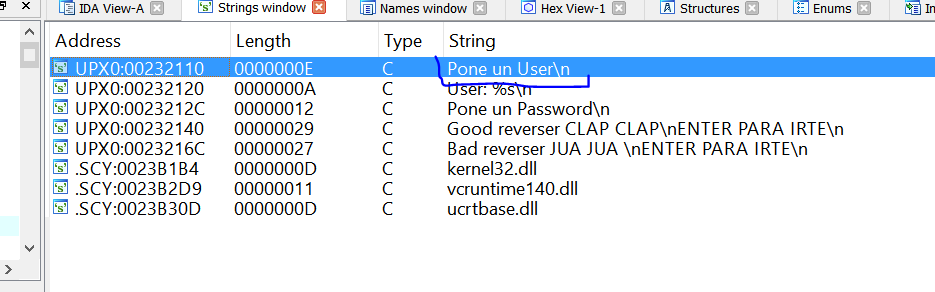
Bueno sabemos que lo primero que hace el programa es imprimir la string Pone un user.
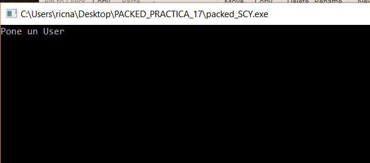
Así que haciendo doble click en dicha string
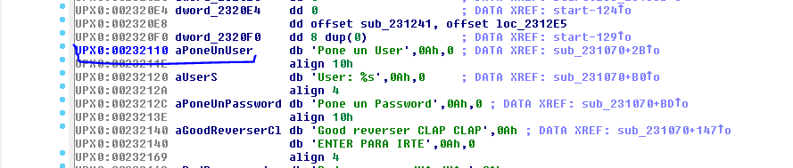
Y buscando la referencia con X.
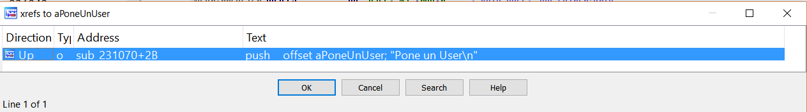
Voy allí.
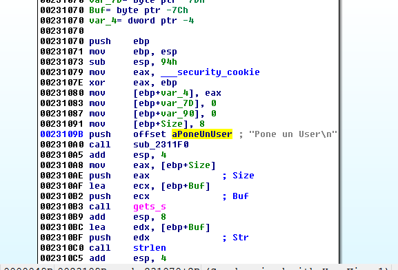
Vamos a reversear estáticamente a partir de aquí.
En las funciones basadas en EBP, dijimos, primero guarda en el stack el EBP de la función que llamo a esta con PUSH EBP y luego hará un MOV EBP, ESP para setear EBP con el valor de referencia para esta función, a partir de donde se calculan las posiciones de los argumentos variables y buffers.
Vemos es que reserva 0x94 bytes para las variables locales y buffers, a partir de valor base de EBP.
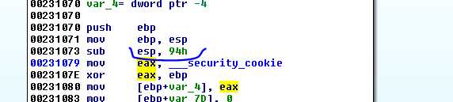
Bueno haciendo doble click en cualquier variable o argumento el LOADER muestra la vista estática del stack.
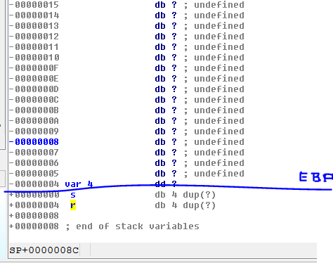
Eso lo vemos allí, esta es una función sin argumentos porque esos se pasan primero con los PUSH antes de llamar a la función y estarían debajo del return address (r), en este caso no hay nada debajo de r por lo cual es una función sin argumentos.
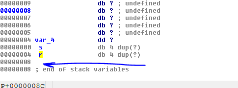
Es el mismo caso de la vez anterior es la función main y tiene argumentos que son argv y argc etc, pero como no los usa dentro de la función, ida no los considera.
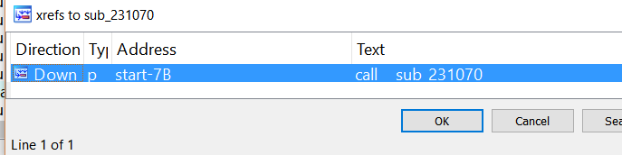
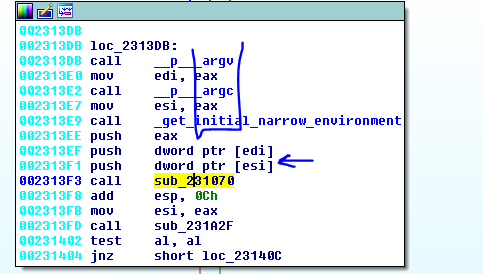
Renombraremos la función a main y al hacerlo ida me agrega automáticamente los tres argumentos.
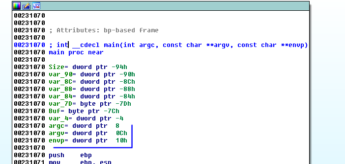
Igual si apretamos X en cualquiera de los tres.
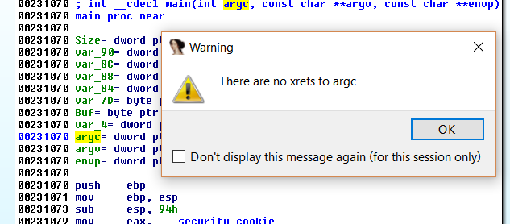
No se utilizan así que no le daremos mucha importancia.
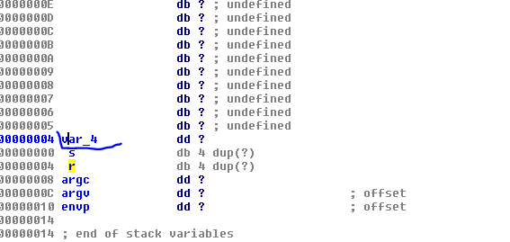
Volviendo a la visión estática del stack, vemos ahora que están los argumentos debajo del return address como corresponde, luego s que es el STORED EBP como dijimos que guarda el EBP de la función anterior con PUSH EBP y hacia arriba el espacio para las variables que normalmente tiene esa variable var_4 que es para proteger el stack de buffer overflows.
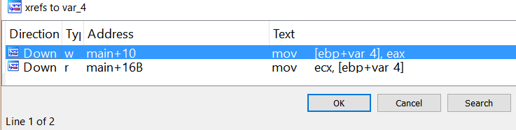
Tiene dos referencias una al inicio de la función cuando guarda el valor de la cookie de seguridad allí en el stack.
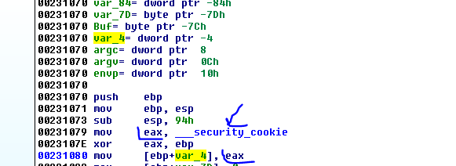
Dicho valor es un valor random que se XOREA con EBP y se guarda allí en var_4 al iniciar la función y la otra referencia es aquí.
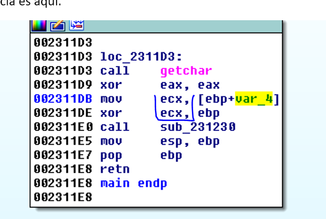
Donde vuelve a recuperar el valor original guardado y lo vuelve a XOREAR con EBP para recuperar el valor original en ECX y dentro de ese CALL chequeara el mismo.
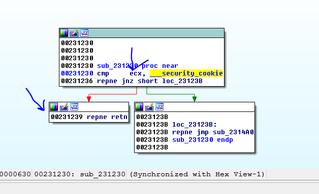
Si todo esta correcto retornara, pero si ECX no tiene el valor original de _security_cookie se va al JMP ese que va a EXIT y no te deja llegar al RET de la función.
Ya veremos que solo puede ocurrir que vaya a EXIT si hubo un OVERFLOW que machaco el valor de var_4 dentro de la función, por ahora renombremos a CANARY o SECURITY COOKIE, la var_4.
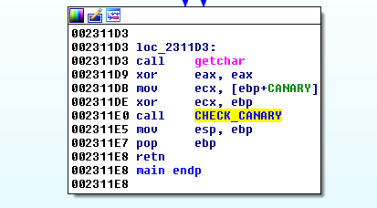
Ahora quedo más lindo.
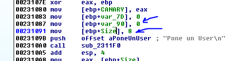
Luego vemos dos variables que aún no sabemos que son que se inicializan a cero, y una variable que ya tiene el nombre size que se inicializa a 8.
Si vemos las referencias a var_7d, vemos que se usa aquí.
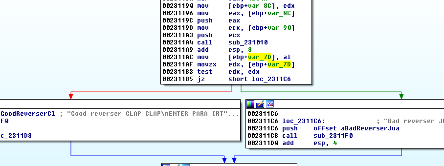
Guarda en valor de AL en dicha variable al volver de un CALL y luego levanta ese byte a EDX para chequear si es cero o no, para decidir si somos buenos reversers o no, así que es una variable de un solo byte, y le pondremos FLAG_EXITO.
Verificamos en la vista estática que esta detectada como tipo byte.
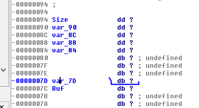
Le cambiamos el nombre con N.
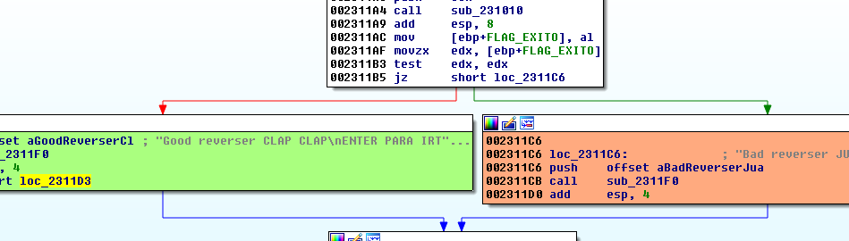
Ahora quedo mejor, pinto de verde el bloque de chico bueno y de rojo o naranja para que se vea el contenido el de chico malo.
Obviamente si solo fuera parchear ese salto JZ sería el punto justo, pero trataremos de llegar al final de esto.
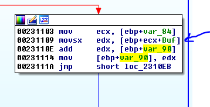
Vemos que la otra variable var_90 que ponía a cero al inicio, va sumando los bytes que va leyendo del Buf ya que lee de a uno y lo pasa a EDX en 0x231109 y luego lo suma a cero en el primer ciclo, y EDX siempre va guardando la sumatoria de todos los bytes ya veremos que contiene el Buf que está leyendo, pero por ahora pongámosle sumatoria.
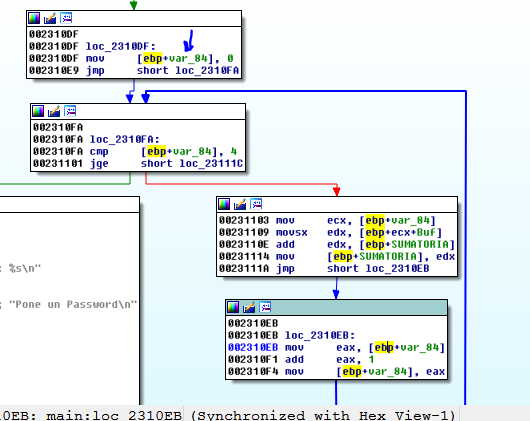
Vemos que var_84 es el contador de ese LOOP donde va sumando, pero vemos que el mismo solo suma los primeros cuatro bytes ya que la salida es cuando ese valor es mayor o igual a 4.
Allí vemos el CONTADOR y como se va incrementando.
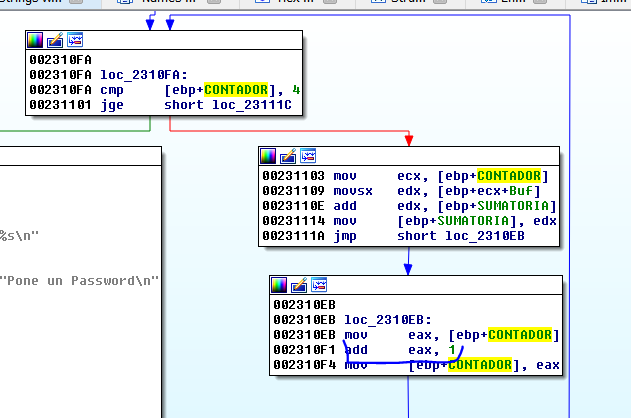
Obviamente también se va sumando en 0x231109 al inicio del Buf para ir leyendo y sumando los siguientes bytes.
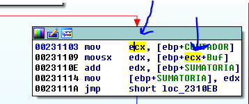
Bueno ya vimos que ese LOOP va leyendo los bytes de Buf y los suma y los va guardando esa suma en SUMATORIA, veamos que tiene Buf.
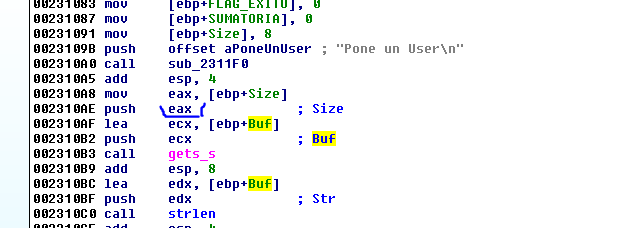
Vemos que Buf al inicio se llena con 8 bytes como máximo con el nombre del user, usando gets_s para ingresar por teclado.
Nos faltaba cambiar esa función a printf
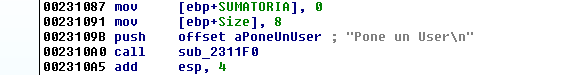
Listo.
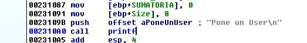
Representación estática del stack.
También en la representación estática vemos el largo del buffer Buf con click derecho-ARRAY.
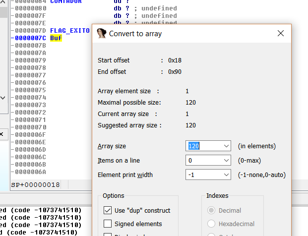
Coincide con el código fuente
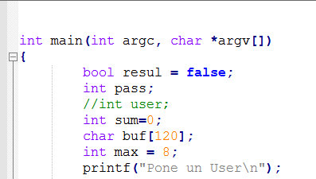
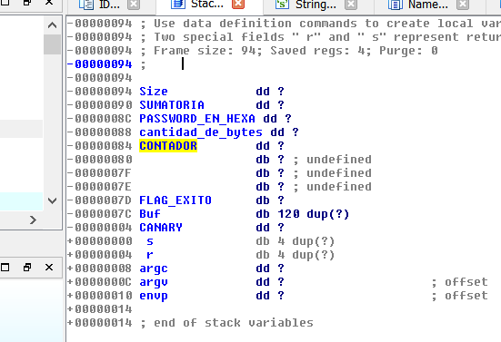
La representación del stack se va aclarando.
Además luego de recibir en el Buf, le pasa el mismo a strlen para saber el largo de lo que tipeaste.
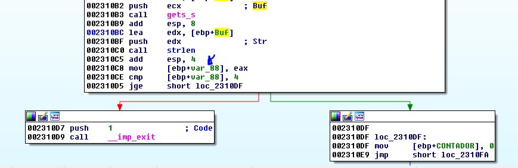
Por lo tanto, la var_88 es la cantidad de bytes de lo que tipeamos.
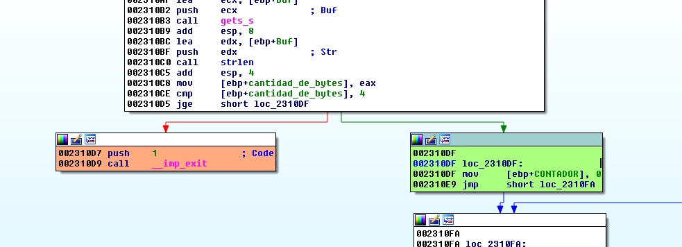
Y si la misma es menor que 4 te tira a EXIT.
Ya tenemos visto que ese LOOP suma los cuatro primeros bytes del user que tipeamos, así que lo agruparemos para que no moleste a la vista clickeando en las barras de cada bloque apretando CTRL.
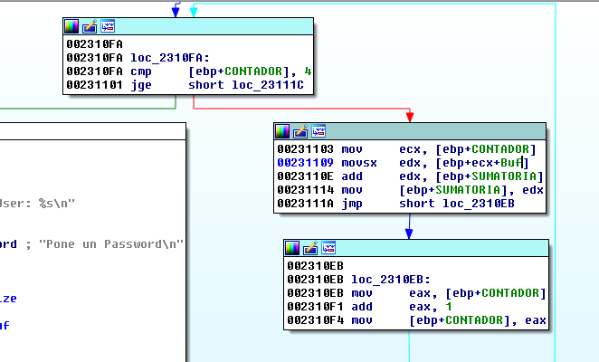
Ahora quedo mejor, con click derecho-GROUP NODES y lo puedo desagrupar si necesitara con UNGROUP.
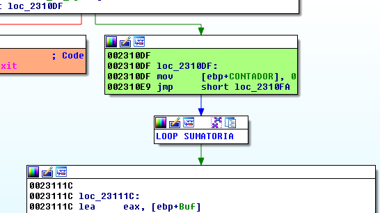
Vemos que vuelve a utilizar el mismo Buf para ingresar el password, ya que ya tiene guardada la sumatoria de los primeros 4 bytes de user.
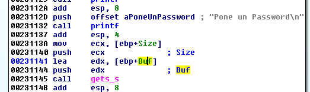
También se fija con strlen el largo y si es menor que 4 te tira a EXIT.
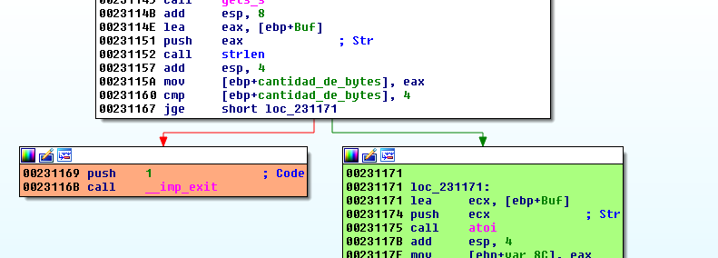
Si es 4 o más el largo sigue por el bloque verde.
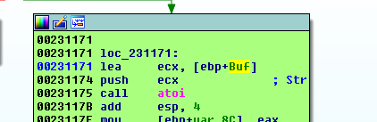
Luego toma el password y lo convierte a valor hexadecimal con ATOI, en Python sería equivalente a la función hex().
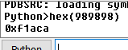
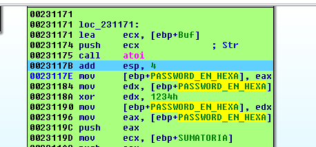
Allí vemos que XOREA el password en HEXA con 0x1234 y lo vuelve a guardar en la misma variable.
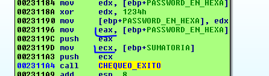
Vemos que le pasara ambos la sumatoria de los 4 primeros bytes del user y el valor hexa xoreado con 0x1234 del password a esa función que llamaremos CHEQUEO_EXITO, su resultado hace que salte a chico bueno o chico malo.
Allí vemos los dos argumentos, arg_4 será el que primero se pasa o sea en la referencia será el que se PUSHEA primero.
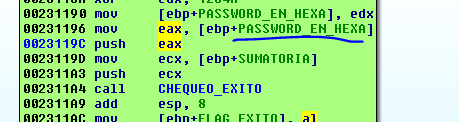
Así que renombraremos dentro de la función ambos argumentos.
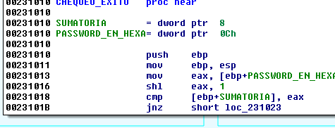
Ahora propagaremos los argumentos con click derecho SET TYPE.
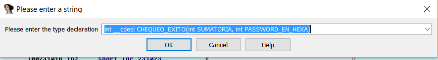
Con lo cual se declara la función.
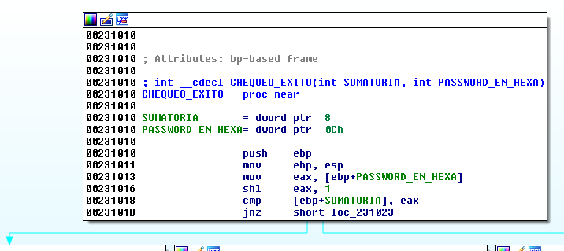
Y veremos si coincide en las referencias.
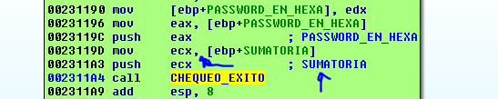
Vemos que los carteles azules que aparecen al propagar coinciden con los nombres en la referencia, así que está todo bien.
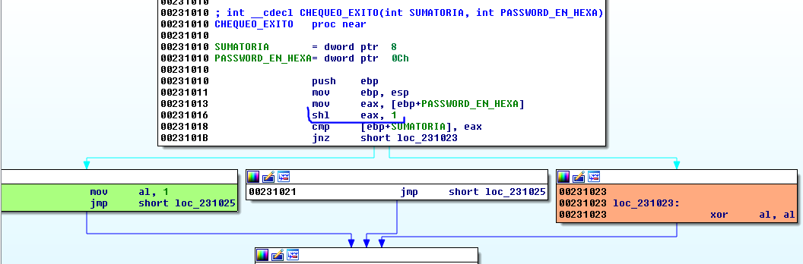
Veo que antes de comparar ambos hace SHL EAX, 1 lo cual equivale a multiplicar por 2.
Entonces si son iguales va al bloque verde donde pondrá AL a 1 y lo devolverá siendo el FLAG_EXITO que decidir si somos buenos reversers o no.
Así que resumiendo
Toma los primeros 4 bytes de USER y los suma
El PASSWORD lo pasa a HEXA y lo XOREA con 0x1234 y lo multiplica por 2
Haremos una formula suponiendo que conocemos el USER ya que el keygen se basa en eso, dado un cierto USER hallar el password correspondiente.
X = PASSWORD ya convertido a HEXA
(X ^ 0x1234)* 2 = SUMATORIA
Si despejamos X
X ^ 0x1234= (SUMATORIA/2)
X= (SUMATORIA/2) ^ 0x1234
La función XOR es inversible y se puede pasar de miembro sin problemas ya que si.
A ^ B = C
A = B ^ C
Bueno la cuestión es que el valor a hallar X es igual a
X= (SUMATORIA/2) ^ 0x1234
Si mi nombre fuera pepe el cual es válido ya que es menor que 8 bytes de largo la sumatoria de los bytes seria.
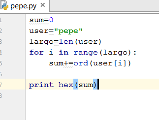
Allí obtuvimos la sumatoria de mi user pepe.
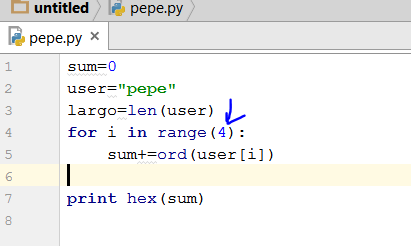
Pero recordemos que no suma todos los bytes sino solo los cuatro primeros.
Allí quedo mejor ya que chequea que sea mayor o igual que 4 al igual que hace el programa.
Podemos hacerlo genérico para cualquier user que se tipee.
Vemos que usando raw_input obtenemos lo que se tipea por consola.
El resultado para pepe es similar la sumatoria da 0x1aa pero puedo obtenerla para cualquier user.
Teníamos la formula
X= (SUMATORIA/2) ^ 0x1234
Así que debería dividir por 2 y hacer el XOR con 0x1234 para hallar el password en hexadecimal.
Si lo pruebo
Ya tenemos el keygen no necesitamos hacer la conversión del password hexa a decimal porque Python al imprimir lo hace siempre imprimiendo en decimal por default.
Vemos que suma solo los primeros 4 caracteres del nombre de usuario, el password da igual si es más largo pero los 4 caracteres iniciales son similares.
Igual el ejercicio crashea al tipear 8 caracteres ya que deben ser 8 en total incluyendo el 0 final de la string.
Hasta 7 funciona bien.
Solo hay un problema cuando la sumatoria da negativa
No tendría solución ya que el password termina multiplicándose por 2 y siendo una multiplicación de enteros nunca dará impar, así que le agregaremos ese chequeo.
Allí verificamos el resto de dividir por dos si es cero es par sino es impar y no tiene solución.
Creo que nuestro keygen ya quedo bastante bien, así que podemos terminar esta parte y vernos en la siguiente.
Hasta la parte 19
Ricardo Narvaja